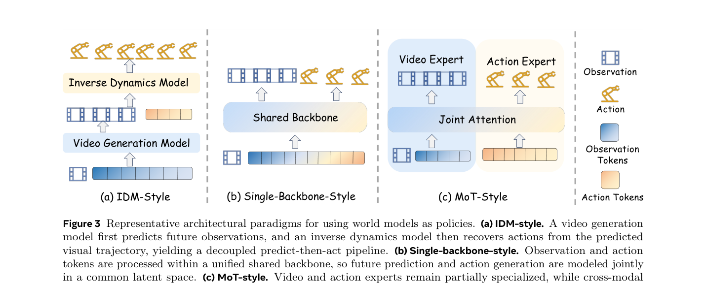
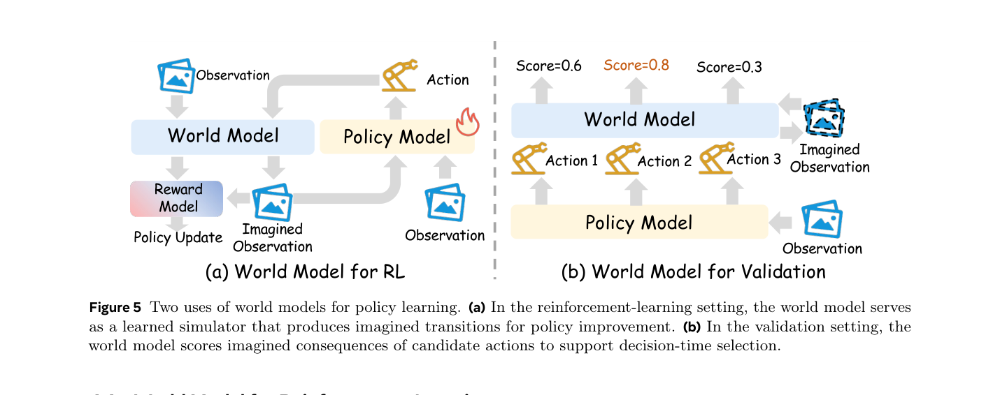
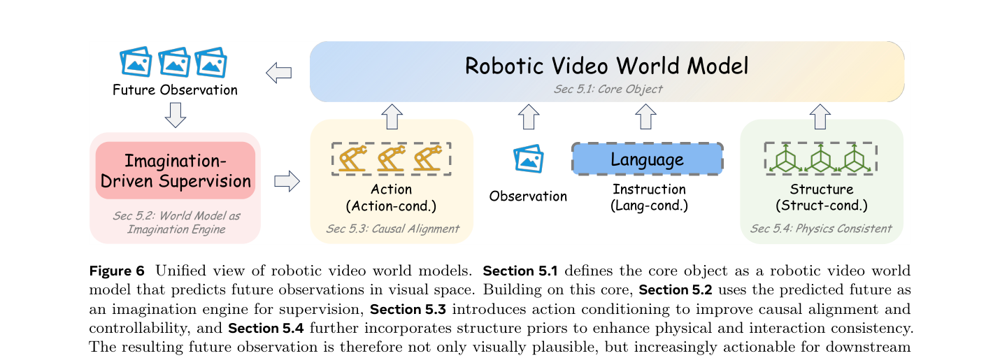
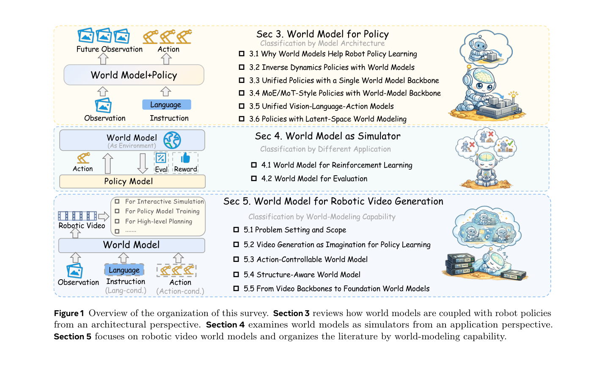
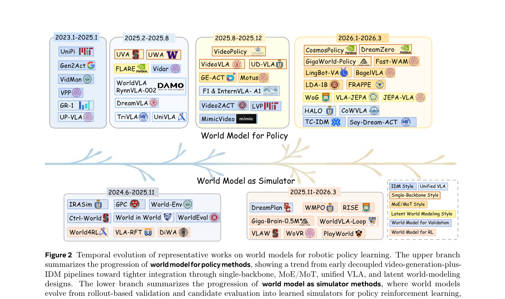

◆核心观点 · 证据
每条 = 中文论点 + 📍页/节 + 🔤逐字原文(Ctrl-F 锚点) + 🀄译文 + 💡解读。这是综述，"观点"= 它对全领域的判断与组织框架，而非单一方法。
purely reactive VLA policies remain limited in complex physical environments, where they often struggle with long-horizon reasoning, temporal credit assignment, and robustness under compounding errors.
world models are not merely a generative enhancement, but a predictive bridge from semantic intent to physically realizable behavior.
a model does not qualify as a world model in our sense simply because it generates plausible future images or videos. Rather, it must capture environment evolution in a form relevant to robot interaction and useful for downstream policy-related computation.
an actionable world model should provide three core capabilities: foresight ... imagination-driven planning ... and data amplification
policy model, passive world model (video generation model), controllable world model and inverse dynamics model are not entirely separate abstractions; rather, they correspond to different ways of querying or factorizing the same idealized joint distribution.

A defining feature of this family is its architectural decoupling: the predictive model is typically pretrained first and then frozen, lightly adapted, or connected to a separate policy head, rather than optimized jointly with action generation.
whether video-pretrained backbones are consistently superior to matched-scale VLM backbones for robotic control remains an open empirical question

conventional reinforcement learning on physical robots is often slow, expensive, difficult to reset, and potentially unsafe, while pure imitation learning remains limited by demonstration quality and cannot easily learn from failures.
the focus moves beyond reinforcement learning in a world model toward reinforcement learning with a world model whose fidelity, action-following precision, and rollout reliability must themselves be continuously improved.

The key challenge is no longer simply to generate realistic futures. It is to generate futures that remain causally aligned with robot actions, physically and kinematically self-consistent over long horizons, coherent across views and embodiments, stable under interaction, and executable enough to support real policy improvement.
From this policy- centric perspective, visual realism alone is neither necessary nor sufficient
high performance can emerge from multiple design paradigms, indicating that photorealistic video generation is not necessary for effective embodied control.
The technical bottleneck is weak action conditioning: many predictive world-model objectives are trained mainly from observation history and task intent, so their futures can be plausible without being causally tied to the robot action to be executed.
📊关键效果 · 数字
综述自身不产新数字，而是汇总各方法在公共基准上的代表性结果，用以支撑"没有单一架构通吃 + 长程是分水岭"的判断。
| 范式 | 方法 | Spatial | Object | Goal | Long | Avg |
|---|---|---|---|---|---|---|
| Decoupled | Say-Dream-ACT | 99.4 | 99.2 | 98.6 | 95.4 | 98.1 |
| Single-backbone | Cosmos Policy | 98.1 | 100.0 | 98.2 | 97.6 | 98.5 |
| MoE/MoT | LingBot-VA | 98.5 | 99.6 | 97.2 | 98.5 | 98.5 |
| Unified VLA | RynnVLA-002 | 99.0 | 99.8 | 96.4 | 94.4 | 97.4 |
| Latent-space | VLA-JEPA | 96.2 | 99.6 | 97.2 | 95.8 | 97.2 |
LIBERO 标准 4-suite（Table 5 节选）。竞争力分布在所有范式上，但 Goal / 尤其 Long 套件掉点更明显——长程一致性才是真区分度。
larger drops are more common on Goal and especially Long suites, where success depends more on sustained, action-grounded consistency over extended trajectories.
🗺领域全景（两张总图）


⎘开源状态
这是综述，不发布模型/权重；"开源"= 配套的 awesome-list 仓库 + 项目页，持续维护、收录各方法的论文/代码/权重链接。
- 论文清单
- 开放 NTUMARS/Awesome-World-Model-for-Robotics-Policy（在线，约 581★，持续更新）
- 项目页
- 开放 ntumars.github.io/wm-robot-survey
- 模型 / 权重
- 无 综述本体不含可训练产物
https://github.com/NTUMARS/Awesome-World-Model-for-Robotics-Policy
⚖批判 · 评级
① 时效性极强（覆盖到 2026.3，含 Cosmos、GigaWorld、Genie Envisioner、Unitree UnifoLM、智元/Galaxea 相关数据集等工业/最新工作）。② 真正的"思想增量"是那套预测-控制联合分布统一视角，把 policy/IDM/passive·controllable WM 收编为同一分布的不同查询——对你理解 VLA × 世界模型的耦合非常顺手。③ 5 类 policy 架构 + 模拟器两用途 + 视频 WM 四阶段，taxonomy 清晰、配 Table 1/2 与基准汇总，可直接当"领域地图 + 选型参考"。
① 典型综述局限：广而不深，多数方法只给一两句定位，机制细节需回溯原文。② 汇总的基准数字来自各原论文、协议口径不一（作者已诚实标注"less suitable for strict ranking"），横向对比仅供参考、不可当排行榜。③ 引文里大量 2026 的 arXiv 预印本尚未同行评审，结论稳定性待时间检验。④ 非端到端方法/底层 locomotion 不在范围内（与你的 Track B 几乎无交集）。
评级：Important 作为"VLA × 世界模型"方向的领域地图 + 统一概念框架，对 Track A 价值高；非方法突破，定位是参考综述。